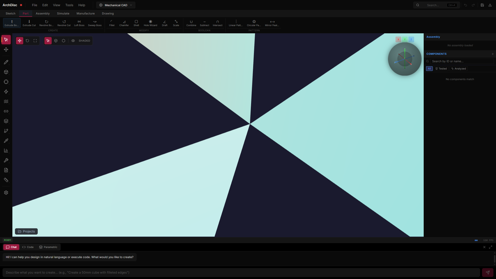

Foundation Capstone
Phone-Stand Bracket — full lifecycle
2026-05-10 · Aluminum 6061-T6 (E = 68 900 MPa, ν = 0.33, α = 23.6e-6 / K, k = 0.167 W/(mm·K))

Static FEM stress contour (iso)
Stage timing
1. build0.008 s
2a. print-prep0.04 s
2b. STL0.002 s
2c. STEP AP2030.038 s
2d. drawing (HLR)0.049 s
3. voxelize (cellSize 4 mm)0.024 s
4. static FEM0.402 s
5. modal5.248 s
6. thermal FEM0.085 s
7. thermo-mechanical0.003 s
8. SIMP topology opt5.011 s
9. tolerance stack (M3 fit)0.037 s
10. feature recognition0.009 s
11a. diagnose0.002 s
11b. repair0.008 s
Mesh + geometry
| Manifold | guaranteed |
| Bounding box (mm) | 80.00 × 105.33 × 20.94 |
| Volume / surface area | 37389.7 mm³ / 20513.5 mm² |
| Surface mesh | 438 triangles, 217 vertices |
| Tet mesh (FEM) | 3480 tets, 1323 nodes (cellSize 4.00 mm) |
4. Static FEM — gravity load
| Load case | 30 N downward at lip (phone weight + safety factor) |
| Boundary | Base plate clamped (z ≤ 0.5 mm) |
| Max displacement | 0.0001 mm |
| Max von Mises | 0.33 MPa |
| Safety factor (yield 276 MPa) | 842.3 |
| CG iterations | 127 |
5. Modal — first natural frequency
| Lowest mode (clamped base) | 54370.7 Hz |
| Inverse iteration | 30 steps · max iters |
6. Steady thermal — base 90°C, lip 25°C
| T range (°C) | 25.00 — 90.00 |
| CG iterations | 37 |
7. Thermo-mechanical coupling
| Max displacement (thermal expansion) | 0.0277 mm |
| Max von Mises (thermal stress) | 206.02 MPa |
| SF | 1.3 |
8. SIMP topology optimization
| Volume fraction (target 0.40) | 0.300 |
| Final compliance | 1.54e-3 |
| OC iterations | 20 |
9. Tolerance stack — Ø4 hole + M3 fastener clearance
| Hole spec | Ø4.0 +0.10 / -0.05 (FDM print, normal Cp 1.33) |
| Fastener spec | Ø3.0 ± 0.04 (M3 SHCS shank) |
| Spec window | [0.5, 1.5] mm clearance, target 1 |
| Nominal clearance | 1.000 mm |
| Worst-case range | [0.910, 1.140] mm |
| RSS σ | 0.0270 mm |
| MC μ ± σ | 1.000 ± 0.0264 mm |
| Cp / Cpk | 6.30 / 6.30 |
| Defects per million | 0 |
10. Feature recognition (CAM-friendly classification)
| Planar patches | 16 |
| Cylindrical patches | 4 |
| Freeform patches | 0 |
| Cylinder diameters (mm) | 3.97 · 3.97 · 3.97 · 3.97 |
11. Mesh repair round-trip
| Surface mesh manifold? | YES |
| Operations applied | harmonize-normals |
| After repair | 438 tris, 0 boundary edges, 0 non-manifold |
This report is the output of one Playwright spec
(e2e/foundation-capstone-lifecycle.spec.js) that drives one
real part through 11 of the 24 foundation modules in sequence. Every
number is from the live solver run, not a curated value.